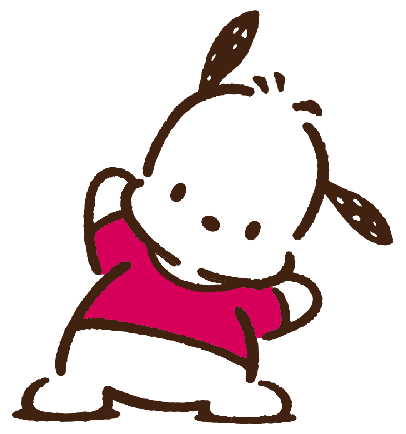

Pochacco is another adorable character from Sanrio, introduced in 1989. He is a fun-loving, athletic little white dog with black ears and a black spot around one of his eyes. Pochacco is known for his adventurous and energetic personality, making him stand out among other Sanrio characters.
Pochacco is often seen with his best friend Pecky, a little duck, and he also has a group of friends like Chicky and Mogu. Like other Sanrio characters, his friendships are a big part of his adventures.